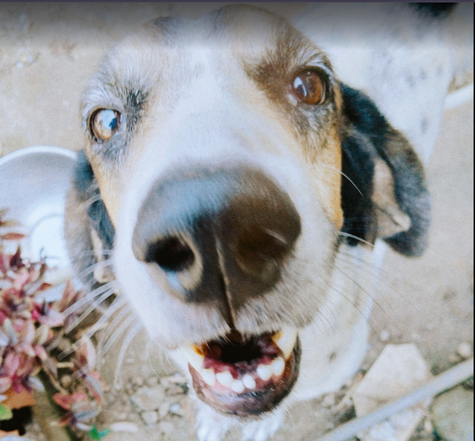
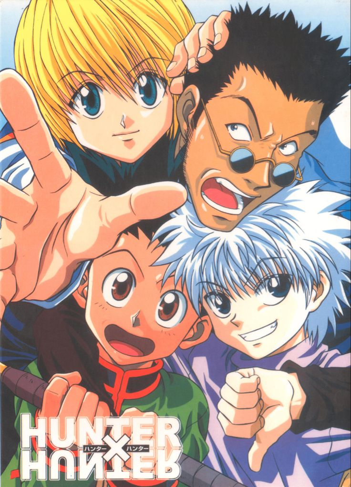

Analía Rodríguez
Edad: 20 años
Cédula: 8-1037-1667
Me gusta dormir, extraño a mi perro. Dato interesante: soy parte del 9% de personas que sufren de una condición cutánea específica.

Hunter x Hunter
Género: Shonen
Año: 1998
Hunter x Hunter es un manga el cual relata la vida de un niño que quiere encontrar al papá que lo abandonó y decide convertirse en cazador para encontrarlo.